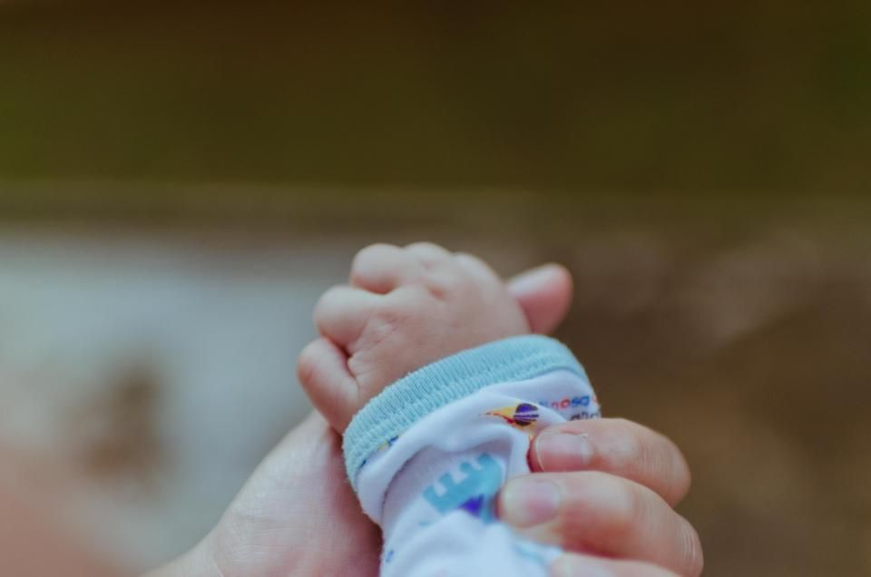
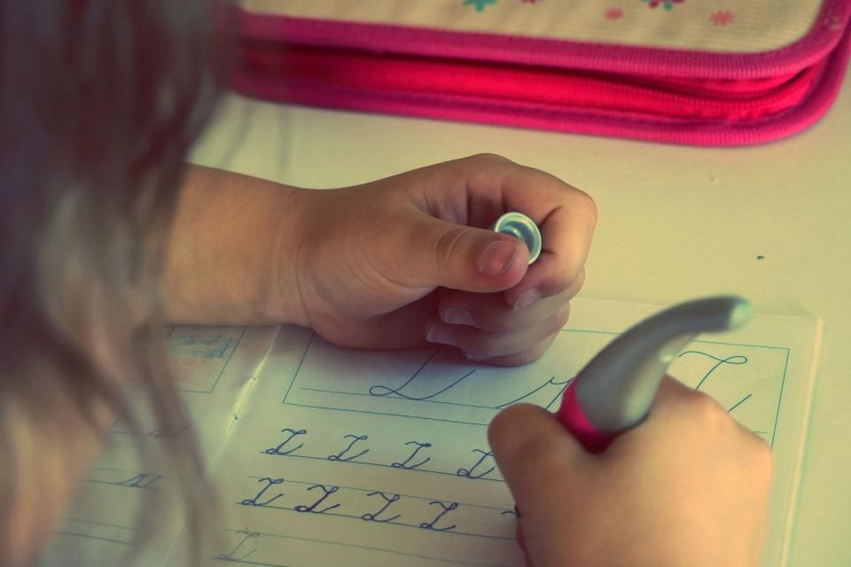
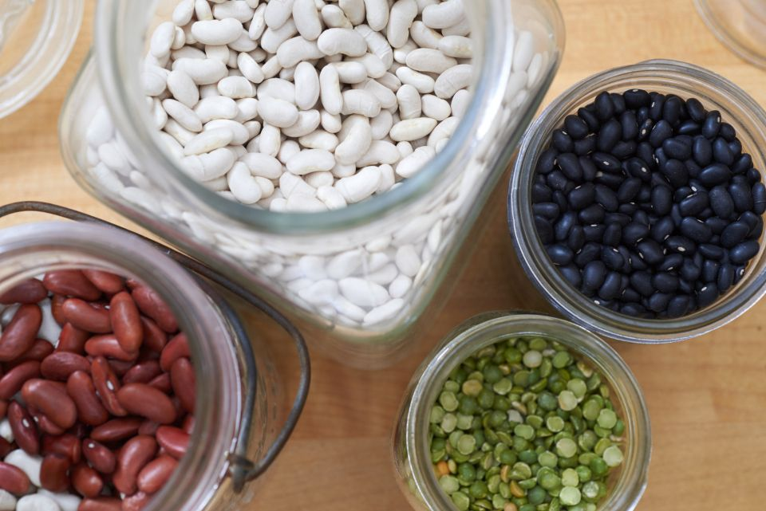
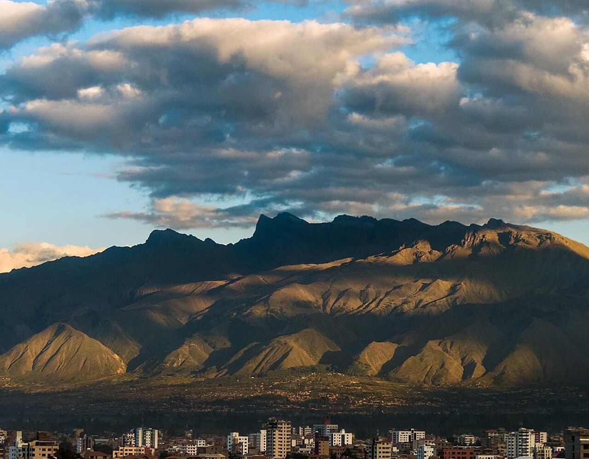
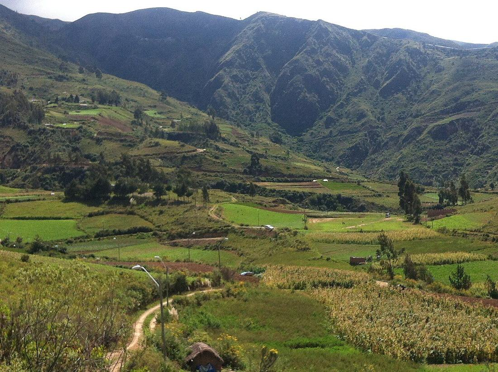
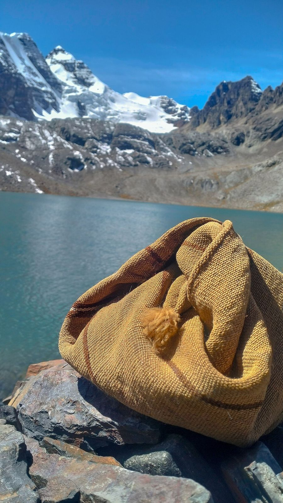

10Ago
Gran Caminata por la Solidaridad
La comunidad educativa, el Centro Infantil y SEMCA renovamos el compromiso con la protección de niñas, niños y adolescentes, caminando juntos por una infancia libre de violencia.
SEMCA — Semillas del Cambio es una organización sin fines de lucro de Tiquipaya, Cochabamba. Trabajamos con las familias del valle en la primera infancia, la salud de las madres y la protección de niñas y niños.
SEMCA nació del trabajo conjunto de vecinas, vecinos y docentes de Tiquipaya que querían que las niñas y los niños del valle tuvieran las mismas oportunidades que cualquier otro. No llegamos con un programa cerrado: escuchamos primero a las familias y a las escuelas, y a partir de ahí construimos.
Tenemos nuestra sede en la zona de Chilimarca, sobre la avenida del mismo nombre. En el mismo terreno funcionan la escuela, el centro infantil y el huerto, y ahí recibimos a las familias todos los días de la semana.
Trabajamos articulados con el Gobierno Autónomo Municipal de Tiquipaya, con la red pública de salud y con los centros infantiles de la zona. Nada de esto lo hacemos solos.
Cuatro líneas de trabajo sostienen todo lo demás. Las cuatro son gratuitas y abiertas a las familias de Tiquipaya y alrededores.
Estimulación temprana, juego y orientación a madres, padres y cuidadores. Es la etapa que define buena parte del desarrollo futuro, y la que menos apoyo recibe.
Controles básicos, vacunación y consejería, con el calendario coordinado con el centro de salud de la zona.
Jornadas de prevención, caminatas por la solidaridad y talleres de crianza positiva con la comunidad educativa.
Las niñas y niños siembran, cosechan y cocinan. El huerto es aula, despensa y excusa para aprender a comer bien.



Sobre estas fotos: las marcadas como imagen de archivo ilustran el tipo de trabajo que hacemos, pero no son de SEMCA ni muestran a las familias que acompañamos.
Lo que hicimos en los últimos meses, con las familias, las escuelas y el municipio.
La comunidad educativa, el Centro Infantil y SEMCA renovamos el compromiso con la protección de niñas, niños y adolescentes, caminando juntos por una infancia libre de violencia.
Con el lema «Apoyo a mi hijo en el deporte y digo NO a la violencia», las niñas y niños de kínder y pre-kínder de la Unidad Educativa «Para la Vida» inauguraron el campeonato organizado por el municipio de Tiquipaya.
Celebramos a las maestras que cada día acompañan y fortalecen el desarrollo integral de la primera infancia, con bailes y presentaciones preparadas por las niñas y niños.
Tiquipaya está en el valle bajo de Cochabamba, a unos diez kilómetros de la ciudad, entre cerros y acequias de riego. Estas son algunas vistas de la zona.




SEMCA está inscrita en el Registro Único Nacional de ONG del Estado Plurinacional de Bolivia, con ámbito de trabajo en el departamento de Cochabamba. Publicamos nuestros datos completos para que cualquiera pueda verificarlos.
Puedes sumarte como voluntaria o voluntario, colaborar con una donación o abrirnos las puertas de tu escuela o empresa. Todo lo que llega vuelve a la comunidad.
Todavía no tenemos un canal de donaciones en línea. Si quieres apoyar, escríbenos y te contamos cómo hacerlo por transferencia, en especie o en persona.